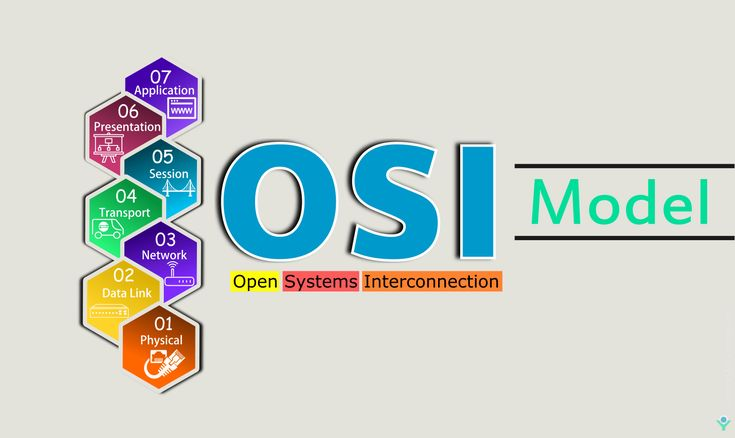

Laboratorio de Hardware
Temas:
Sistema de Redes
Un sistema de redes es un conjunto de dispositivos, software y medios físicos interconectados para compartir recursos e información, ya sea mediante conexiones alámbricas o inalámbricas. Fundamental para la comunicación, incluye elementos como ordenadores, servidores, switches, routers y protocolos (como TCP/IP).
Modelo OSI

El modelo OSI (Open Systems Interconnection) es un marco conceptual estandarizado por la ISO en 1984 que divide la comunicación de red en siete capas distintas. Facilita la interoperabilidad al definir cómo viajan los datos desde el hardware físico (capa 1) hasta las aplicaciones de usuario (capa 7) en sistemas abiertos.
Las 7 capas son:
- (7) Capa de Aplicación: Proporciona servicios de red a las aplicaciones de usuario final (ej. HTTP, FTP, SMTP).
- (6) Capa de Presentación: Traduce, cifra y comprime los datos para asegurar que sean comprensibles para la aplicación.
- (5) Capa de Sesión: Gestiona (inicia, mantiene y finaliza) las sesiones entre aplicaciones.
- (4) Capa de Transporte: Segmenta datos y asegura la transferencia confiable punto a punto (ej. TCP, UDP).
- (3) Capa de Red: Determina la ruta física de los datos (enrutamiento) y maneja direcciones lógicas (IP).
- (2) Capa de Enlace de Datos: Gestiona el direccionamiento físico (MAC), la detección de errores y el acceso al medio.
- (1) Capa Física: Transmite los bits brutos (0s y 1s) a través de medios físicos (cables, ondas de radio).
Volver al inicio